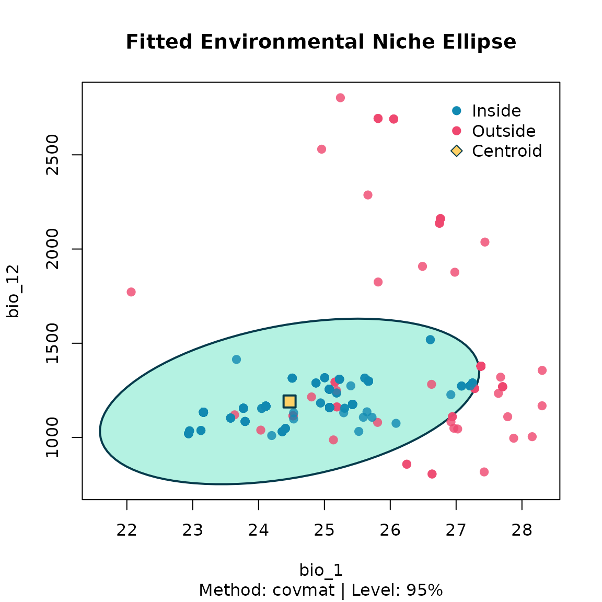
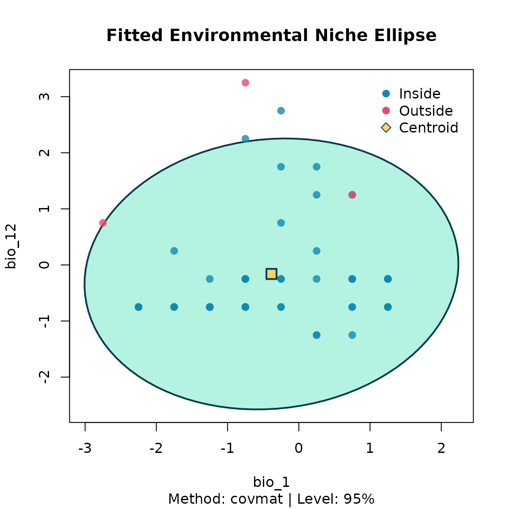

After thinning, the environmental niche is summarised by a
multivariate ellipsoid via fit_ellipsoid(). Two estimators
are available:
-
"covmat"— classical sample mean and covariance. -
"mve"— robust Minimum Volume Ellipsoid (Rousseeuw, 1985).
The ellipsoid boundary is defined by a chi-square cutoff on the
squared Mahalanobis distance, controlled by level (default
95 %).
library(bean)
data(origin_dat_prepared, package = "bean")
data(thinned_stochastic, package = "bean")
data(thinned_deterministic, package = "bean")
env_vars <- c("bio_1", "bio_4", "bio_12", "bio_15")Fit three ellipsoids
We fit one ellipsoid to the raw prepared data and one to each of the thinned datasets, so we can compare what bias correction does to the inferred niche.
origin_ellipse <- fit_ellipsoid(
data = origin_dat_prepared,
env_vars = env_vars,
method = "covmat",
level = 0.95
)
stochastic_ellipse <- fit_ellipsoid(
data = thinned_stochastic$thinned_data,
env_vars = env_vars,
method = "covmat",
level = 0.95
)
deterministic_ellipse <- fit_ellipsoid(
data = thinned_deterministic$thinned_points,
env_vars = env_vars,
method = "covmat",
level = 0.95
)
origin_ellipse
#> -- Bean Environmental Niche Ellipsoid --
#> Method : covmat
#> Dimensions : 4 (bio_1, bio_4, bio_12, bio_15)
#> Level : 95.00%
#> Points used : 1024 (inside: 947, 92.5%)
#> Centroid:
#> bio_1 bio_4 bio_12 bio_15
#> -1.1433128 -0.1851743 -0.4804313 -0.4194209
stochastic_ellipse
#> -- Bean Environmental Niche Ellipsoid --
#> Method : covmat
#> Dimensions : 4 (bio_1, bio_4, bio_12, bio_15)
#> Level : 95.00%
#> Points used : 78 (inside: 71, 91.0%)
#> Centroid:
#> bio_1 bio_4 bio_12 bio_15
#> -0.3502912 -0.3690432 -0.1938518 -0.4200464
deterministic_ellipse
#> -- Bean Environmental Niche Ellipsoid --
#> Method : covmat
#> Dimensions : 4 (bio_1, bio_4, bio_12, bio_15)
#> Level : 95.00%
#> Points used : 56 (inside: 53, 94.6%)
#> Centroid:
#> bio_1 bio_4 bio_12 bio_15
#> -0.3839286 -0.4732143 -0.1607143 -0.4464286Visualise the ellipsoids (2-D slices)


For an interactive 3-D view, install the optional package
rgl and call
plot(origin_ellipse, dims = c(1, 2, 3)). If
rgl is not installed, the plot falls back to the 2-D view
of the first two requested variables.
Inspecting the inferred niche
fit_ellipsoid() returns an object that exposes the
centroid, the covariance matrix, the precomputed inverse, the variable
names, and the subset of points classified as inside or outside the
ellipsoid. These are the building blocks downstream
species-distribution-modelling pipelines need.
origin_ellipse$centroid
#> bio_1 bio_4 bio_12 bio_15
#> -1.1433128 -0.1851743 -0.4804313 -0.4194209
origin_ellipse$cov_matrix
#> bio_1 bio_4 bio_12 bio_15
#> bio_1 0.63868536 -0.08168806 0.11201568 0.01955072
#> bio_4 -0.08168806 0.11787467 -0.08758222 0.05482355
#> bio_12 0.11201568 -0.08758222 0.15183243 -0.06084654
#> bio_15 0.01955072 0.05482355 -0.06084654 0.07808037
origin_ellipse$dimensions
#> [1] 4
origin_ellipse$var_names
#> [1] "bio_1" "bio_4" "bio_12" "bio_15"
head(origin_ellipse$points_in_ellipse)
#> species y x bio_1 bio_12 bio_15
#> 1 Rusa unicolor 15.37239 99.11555 -1.6909295 0.003511156 -0.2454693
#> 2 Rusa unicolor 15.41415 99.28763 -0.8711075 -0.267821213 -0.3053829
#> 3 Rusa unicolor 14.46838 101.22005 -1.3879976 -0.534812263 -0.3835742
#> 4 Rusa unicolor 15.65606 99.31600 -0.6288324 -0.224408034 -0.2390396
#> 5 Rusa unicolor 14.39543 101.41694 -2.0311866 -0.604273349 -0.5074636
#> 7 Rusa unicolor 14.40847 101.29556 -1.3879976 -0.534812263 -0.3835742
#> bio_4
#> 1 -0.2573387
#> 2 -0.1768698
#> 3 -0.2876102
#> 4 -0.0834852
#> 5 -0.1398570
#> 7 -0.2876102Projecting suitability with nicheR
If you intend to project a bean_ellipsoid into
geographic space, please install the nicheR package and
use its predict() method. bean_ellipsoid
objects carry "nicheR_ellipsoid" as a second S3 class, so
once nicheR is attached its predict.nicheR_ellipsoid()
method dispatches on them automatically — no conversion step is
required. If you use the prediction step in published work, please cite
nicheR (see the References section at the bottom of this vignette).
Installing and loading nicheR
Install the nicheR from GitHub:
# Installing and loading packages
if (!require("devtools")) install.packages("devtools")
# To install the package use
devtools::install_github("castanedaM/nicheR")
library(nicheR)Predicting suitability
library(terra)
env <- terra::rast(system.file("extdata", "thai_env.tif", package = "bean"))
# 'origin_ellipse' is the bean_ellipsoid we fitted above.
suit <- predict(
origin_ellipse,
newdata = env,
include_suitability = TRUE,
suitability_truncated = TRUE,
include_mahalanobis = FALSE
)
terra::plot(suit)References
- Castaneda-Guzman, M., Hughes, C., Paansri, P., & Cobos, M. E. (2026). nicheR: Ellipsoid-Based Virtual Niches and Visualization. R package version 0.1.0. https://github.com/castanedaM/nicheR
- Rousseeuw, P. J. (1985). Multivariate estimation with high breakdown point. Mathematical Statistics and Applications, Vol. B, 283–297.
- Van Aelst, S. & Rousseeuw, P. (2009). Minimum volume ellipsoid. Wiley Interdisciplinary Reviews: Computational Statistics, 1(1), 71–82.